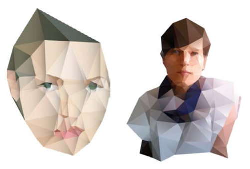
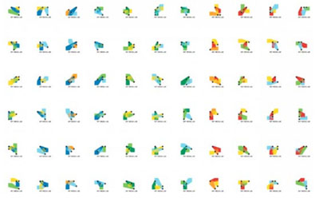
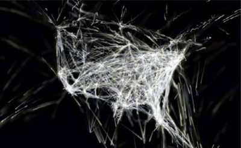
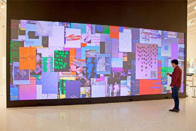
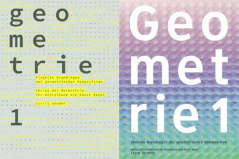

Design & Algorithms
INTRODUCTION
"Today’s creation largely depends on digital tools. Far from being a neutral means to an artistic achievement, those tools are actually opinionated: they carry values and are full of conventions about the way things ‘ought’ to be done. To us, a greater awareness of the role of digital tools is—if important to everybody—crucial in the education of artists and designers. Instead of means, the soft- and hardware tools can become partners to consciously think and converse with, to question and interrogate and to clash with.
And because (visual) creation is so tightly coupled with technological development, a larger awareness of these tools can help one speculate about future practices and invent the tools to support them."
-http://reader.lgru.net/pages/about/
Historically visual communication design involves the manipulation of an artefact to in order communicate an idea in a visual form. Even if the process is mediated – for example by working with technologies such as a design program or with a letterpress – the process is conventionally viewed as one of ‘direct’ application of the designers intentions in the production of a designed form.
The increasingly pervasive and mediating presence of digital technologies means that today creation largely involves digital tools and media, this development has raised new possibilities and roles for design. One possibililty is the use of code or algorithmic approaches by designers, artists, architects and other creative practitioners as part of the design process. Understanding and working with code affords new approaches through which to generate forms and communicate ideas fundamentally altering the design process. Designers can generate designs that are not created by the direct manipulation of form but are the emergent outcomes of dynamic processes, systems or programs.

With proprietary software you are limited to manipulating digital information within the bounds of what the software lets you do. For example when editing a photo in Photoshop, the program determines how the data of the image is visually presented on screen and what you can do with the image. With code you are able to more directly interpret, manipulate and generate digital data. For example you could write your own image filter. The images above are abstracted from a photographic image by using software which is custom built by the designer. The “Delaunay Raster” is a process created by designer Jonathan Puckey which he uses to produce illustrations from an original photograph. The effect was developed by using code written in Scriptographer in Adobe Illustrator. Scriptographer is a scripting plugin for Adobe Illustrator that gives you the ability to use code to extend Illustrator’s abilities. For more examples and details see: http://jonathanpuckey.com/projects/delaunay-raster/
ALGORITHMS
Computer software such as Puckey’s Delaunay Raster is composed of algorithms or sets of rules written as lines of code that describe processes. As a description of a process an algorithm breaks it down into smaller modular steps which are easier to follow. Algorithms are usually associated with digital computers but are not limited to the realm of 0s and 1s. A knitting pattern is an algorithm, as too are a list of navigational directions, you could even break the process of making a cup of tea into an algorithm – a set of instructions on how to make tea.
Code has become a new design material, and in today’s lab you will be looking at and playing with the potential of using algorithmic or rules based design to produce formal visual outcomes. Through the tasks you will discover that one algorithm can generate many possible variations within a ‘design space’ (the range of possible outcomes that can be generated by the algorithm). Through this you will gain insight into emerging approaches to the process of design where “the nature of design itself has broadened from giving form to discrete objects to the creation of systems and more open-ended frameworks for engagement” (2).
Generative design is emergent or dynamic as the process or algorithm created by the designer is capable of creating variations from the one set of instructions. In this way generative design imitates nature - nature does not design, nature codes designs generating endless variations (3). In code one way this could be achieved is by creating random values each time the code is run. An example would be positioning elements at random co-ordinates in a composition. You will see this in the base posters that you will use for the first task. Each poster is different as random values are used to pick which quote will be selected and then to position the type elements on a grid on the page.
You will not be taught code in this lab but will explore generative or algorithmic design processes on paper that are relevant. You will be given an algorithm or ‘software’ that you will then execute and also have an opportunity to write your own. Your individual and group decisions whilst carrying out an algorithm leads to the emergence of variation in the outcomes i.e. you are the random values in this system.
MORE:
- http://generative-gestaltung.com (website and book now available in English)
- http://formandcode.com/ (website and book)
- http://www.processing.org (an open source programming language originally developed to teach programming fundamentals to designer, artists etc which has now also formed into a professional tool. It can be used to make images, interactive works, animations, sound and so on. Within Narrative, Form and Design in second year you will begin exploring interactive forms using this platform)
- http://conditionaldesign.org/
- http://www.creativeapplications.net/ (a great resource of inspirational examples)
@UTS
Within visual communications you can undertake the Designing Interactions and or the Web Media elective streams. Contact Monica Monin if you have any queries via email: monica.monin@uts.edu.au.
Electives in Visual Communication (or link to)
- Designing Interactions: Introduction to Creative Code
- Designing Interactions: Visualising Information
- Designing Interactions: Physical Computing
- Designing Interactions: User Experience Design
- Web Media 1
- Web Media 2
Examples

The GreenEyl, E Roon Kang, Willy Sengewald MIT Media Lab Identity
(Image Source: http://tinyurl.com/5rfnekc)
The MIT Media Lab identity is based on a visual system rather than a static identity. Each person at MIT can generate their own unique logo through a web interface, the underlying pattern or rules evident in the logo are clearly recognizable as the MIT Media Lab identity.

Aaron Koblin Flight Patterns
(Image Source: http://wiki.processing.org/images/5/57/Koblin-2a.png)
Flight Patterns visualises the air traffic over North America. Through processing vast amounts of data using an algorithm a complex visual pattern is formed. See this talk on TED for more insight and examples of work by Aaron Koblin see http://www.ted.com/talks/aaron_koblin.html

LustLab Poster Wall 3.0 (2007/2011)
Presented in the exhibition Graphic Design: Now in Production at the Walker Art Centre Minneapolis (Image Source: http://tinyurl.com/cedawb3. There is also a video documentation available at this link)
Poster Wall 3.0 generates 600 unique posters daily. These are displayed as a dense collage in an interactive installation and can also be viewed online. Text and image content for the posters is gathered from the web and viewers of the projected screen can send messages which are included in the works. "While the modern poster strove to capture and immobilise the viewer’s gaze, this future poster senses and follow you. It compels you to provide your own message." - Andrew Blauvet

Visual Communication Institute / The Basel School of Design Basil.js
(Image Source: http://basiljs.ch/gallery/geometrie-1/)
Basil.js is an inDesign library developed at the Visual Communications Institute which extends inDesign to enable scripting and the generation of automated layouts.
"While Adobe InDesign on the one hand is offering a valuable set of pre-defined, common solutions for layout and design problems, a programming language on the other hand allows for questioning the set of available methods and for extending it by creating new tools." (see http://basiljs.ch/about/)
REFERENCES & ADDITIONAL READING
- Reas C., McWilliams C., LUST Form + Code: In Design, Art & Architecture 2010 Princeton Architectural Press New York
- Andrew Blauvelt, Towards Relational Design. An excellent article which provides a broad view of the shifting landscape of design from early modernism to now. See http://observatory.designobserver.com/entry.html?entry=7557
- http://generativedesign.wordpress.com/2011/01/29/what-is-generative-design/
TASK 1: POSTER FACTORY from DESIGN AND THE WHITE CUBE POSTERS by JONATHAN PUCKEY AND LUNA MAURER of CONDITIONAL DESIGN
See http://jonathanpuckey.com/projects/graphic-design-in-the-white-cube/
Form a group of ~5 students.
Take one of the poster bases that have been provided.
One person at a time
- Step 1: Place 2 Dots (see rules below)
- Step 2: Place 1 line of tape (see rules below)
- Step 3: Repeat*. Go to step 1 (new person).
- * Keep repeating these steps until you feel your design is finished
If placing a dot:
- place vertically: no more than 15cm from last dot added
- place horizontal: you decide
- mark last dot added with a post it
If placing line:
- line must start from a dot
- line must end at another line (note: if this is the first line on the page then end at a dot!)
- you can cross another line but a line cannot cross over more than one line
For your portfolio submission make sure you record your process and outcome by photograph or scanning. Simply use your smart phone in class to document this. See your Meaningful Marks brief for further information on what you will be submitting in your portfolio for this task